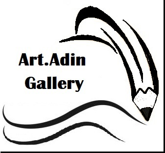
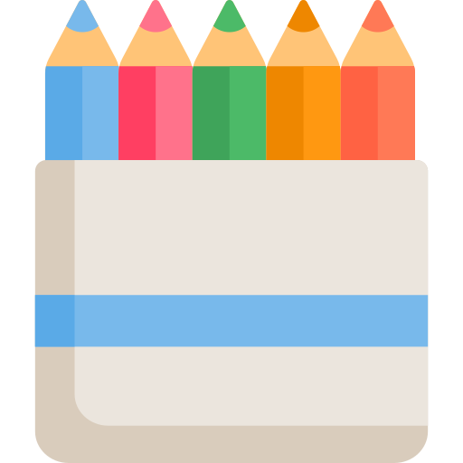
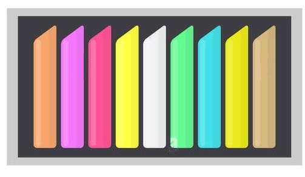
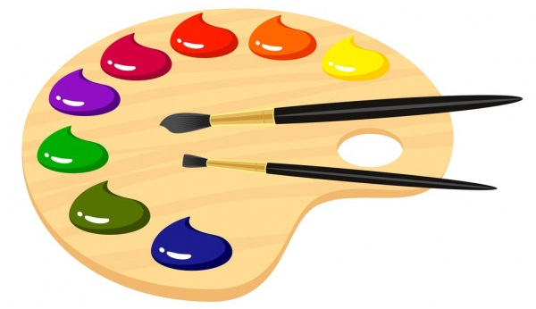

List of current courses:
Drawing
Drawing can express our feelings and emotions. Understanding emotions is generally very complex for us, and art helps us to express and record them. All people over the age of 8, regardless of individual skills and talents, can receive this training.
Painting with crayons
Crayons are an independent tool and sometimes an auxiliary tool in painting that has its own fans. How to use this tool in painting helps students to draw logical subjects with their own taste in a beautiful way. This course teaches students the technical skills to use this tool optimally.
Pastel painting
Chalk pastel is a special and exceptional tool in painting thatcan be used in presenting works of art professionally, and its combination with other artistic tools can create visual effects. This course confirms the skill of using this tool.
Oil painting (intermediate and advanced courses)
In this course, familiarity with paints and basic to professional oil painting techniques will be taught. The topics of this course can be landscape, still life,flowers, animals, and birds.
Art.Adin has started its activity in the field of painting education since 2015. With the aim of meeting educational needs, it is believed that it should have small steps in the growth and promotion of art education. In this regard, we try to respond to the enthusiasts with drawing courses.
We pride ourselves on our ability to adapt to situations in order to provide the best class possible for our students.
Drawing
Painting with crayons
Pastel painting
Oil painting